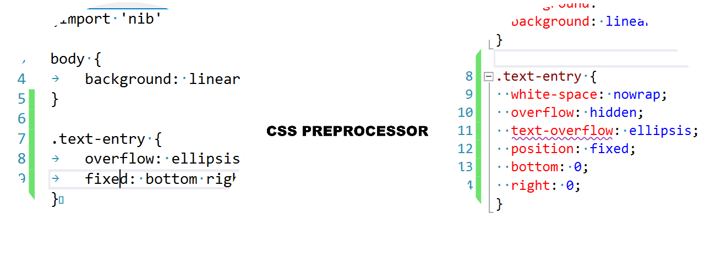
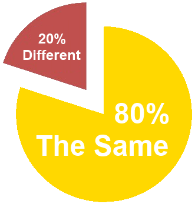
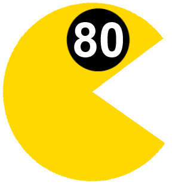

Stylish Stylus
Created by Alex Karlovich / @alexkarlovich
“I once wrote that there was no need to use a CSS pre-processor like LESS or Sass.
I was wrong. Very sorry.”

Andy Clarke
Freelance creative and Director;
owner at Clarke Direction LLC.
Three Whales
-
 LESS, built upon JavaScript
LESS, built upon JavaScript
-
Sass, needs Ruby in order to work
-
 Stylus, NodeJS related
Stylus, NodeJS related
Workflow


80% of SASS, LESS and Stylus is the same.
The 20% that is different is in advanced usage.
Lets'talk about
Features
- Variables
- Color Functions
- Mixins
- Nesting
- Inheritance (Not in LESS)
- Math Operations
- Loops & Conditionals (Not in LESS)
- Importing
Stylus Syntax
-
Will this code be compiled into CSS?
h1 { color: #0982c1; } h2 color red -
Absolutely!
h1 { color: #0982c1; } h2 { color: #f00; } - Brackets, colons, and semi-colons are all optional
Error Reporting
Stylus Code
.text-entry {
.title {
color: color: rgba(#ffcc00, 0,5);
}
}Error
Error: base.styl:3
1| .text-entry {
2| .title {
> 3| color: rgba(#ffcc00, 0,5);
4| }
5| }
TypeError: expected "red" to be a unit, but got rgba:#fc0
at ".title " (base.styl:2)
at ".text-entry " (base.styl:1)Literal Css
@css {
body {
background-color: red;
}
}
.text-entry {
.title {
color: rgba(#ffcc00, 0.5);
}
}Nib: add-on for Stylus
Transparent mixins for CSS properties
* {
box-sizing: border-box;
}CSS
* {
-webkit-box-sizing: border-box;
-moz-box-sizing: border-box;
box-sizing: border-box;
}Nib: add-on for Stylus
Extend css with new properties & values
.text-entry {
fixed: bottom right;
}CSS
.text-entry {
position: fixed;
bottom: 0;
right: 0;
}Nib: add-on for Stylus
Gradients
body {
background: linear-gradient(top, white, black);
}CSS
body {
background: -webkit-gradient(linear, left top, left bottom,
color-stop(0, #fff), color-stop(1, #000));
background: -webkit-linear-gradient(top, #fff 0%, #000 100%);
background: -moz-linear-gradient(top, #fff 0%, #000 100%);
background: linear-gradient(top, #fff 0%, #000 100%);
}Nib: add-on for Stylus
Gradients for old browsers
body {
background: linear-gradient-image(50px, yellow, blue);
}CSS
body {
background-image: url(data:image/png;base64,iVBORw0KGgoAAAANSUhEUgAA...);
}Javascript API
When there’s something you cannot do in Stylus, define it in JavaScript!
Stylus documentation,
page "JavaScript API",
section ".define(name, fn)"
Poll Results
-
54% Have tried to use CSS preprocessor
46% Never tried -
83% Have preference
13% No preference
4% Don't like any CSS preprocessor -
51% LESS
41% Sass
6% Stylus
2% Other